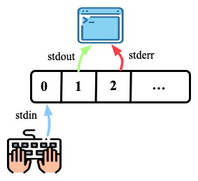
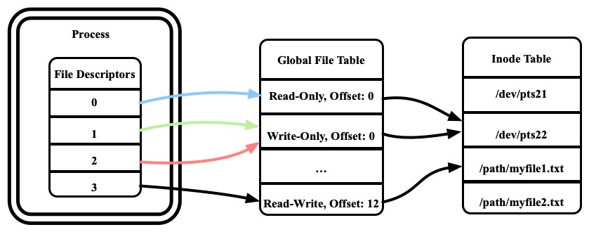
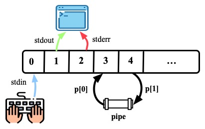
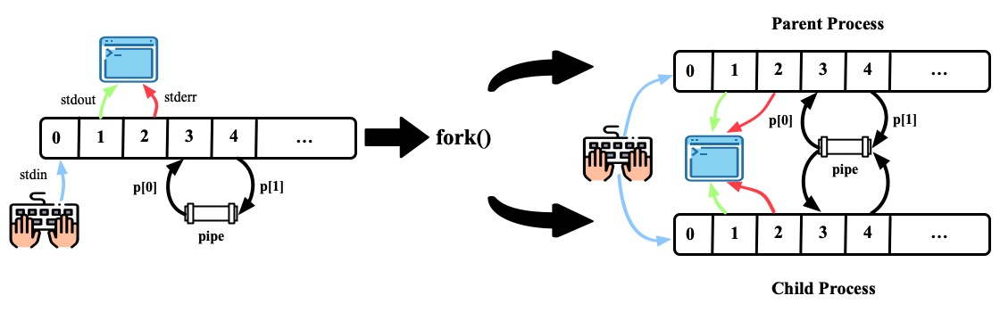
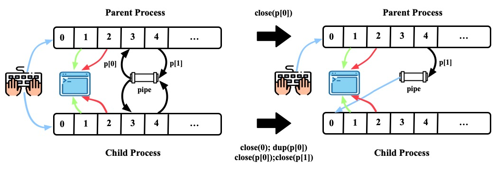
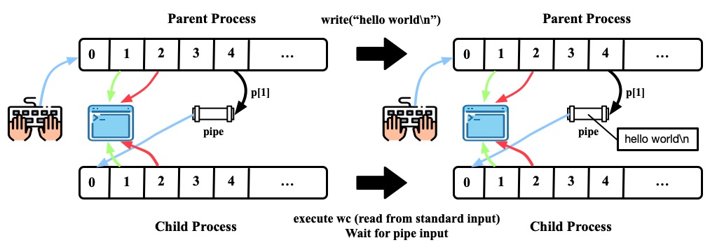
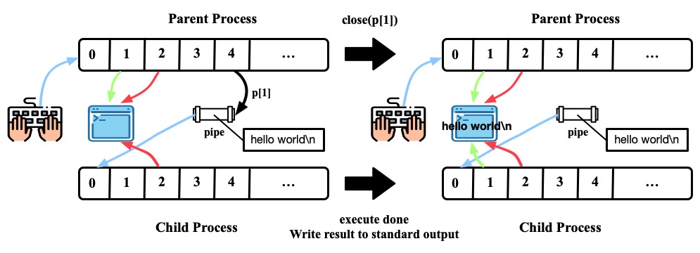
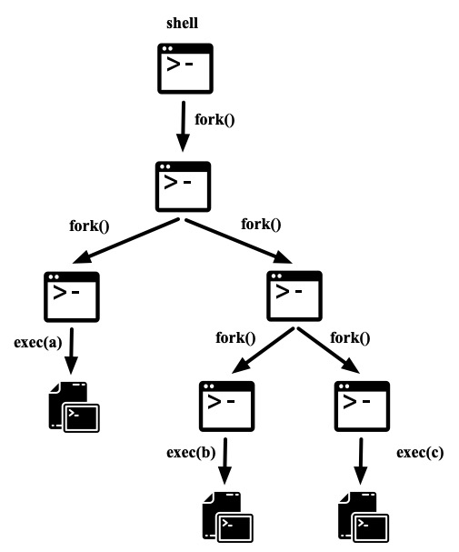

pipe
本文最后更新于：December 1, 2020 pm
File Descriptor—操作系统是怎样操作文件的？
1. 什么是file descriptor
文件描述符是一个small int，它代表了一个内核管理的对象(kernel-managed object)，进程可以通过文件描述符对该对象进行读写操作。
进程可能通过如下方法获取文件描述符： 打开文件、目录或设备，创建管道，复制一个已有的描述符。为简单起见，文件描述符指向的对象都被称为是“文件”；文件描述符抽象出来文件、管道和设备的共同点，使它们看起来都像是字节流。
文件描述符从0开始计数。按照惯例，0是标准输入，1是标准输出，2是标准错误。

2. 那怎么通过file descriptor来操作文件呢

如图有三个table: (per-process) file descriptor table, (system-wide) file table, inode table。 通过这三个table, 我们可以就可以通过file descriptor来处理文件了
内核为每个进程维护一个file descriptor table, 它保存了文件描述符并且指向一个file table entry。(per-process)
内核维护了一个全局的file table, 记录了所有被打开的文件的信息。每个entry记录了这个file所处的mode (read, write, …), 当前操作的偏移量，它指向inode table中的一个entry
inode table对应真实的underlying file的信息。
3. open, close,dup …
system call close会释放一个file descriptor, 以供以后的 open, pipe, dup等系统调用进行使用。
在分配file descriptor时，系统总是会分配最小的、没有被使用的file descriptor。
close(0);
open("input.txt", O_RDONLY);系统调用close释放了file descriptor 0, 那么当前最小的，可供分配的file descriptor就是0
然后以只读的方式打开了文件input.txt, 他将会被分配到file descriptor 0
dup这个系统调用会分配一个新的file descriptor，指向当前file descriptor指向的object。
fd = dup(1);fd得到了一个指向[file descriptor 1指向的object]的file descriptor （禁止套娃!
Pipe
| System cal | Description |
|---|---|
| int pipe(int p[]) | Create a pipe, put read/write file descriptors in p[0] and p[1] |
pipe用于进程间的通信，它其实是内核里一块小的缓冲区，这个缓冲区向进程提供了一对文件描述符，一个用于读而另一个用于写。向管道的一端写数据，会使管道的另一端可以读这些数据。
int p[2];
pipe(p);程序调用pipe来创建管道，并把读和写的文件描述符记录在数组p里, p[0]为读端，p[1]为写端，可以通过file descriptor p[1]向pipe buffer写入内容，通过file descriptor p[0]从pipe buffer中读取内容。
pipe中的内容存储在pipe buffer中，pipe buffer是kernel space中的一块空间，他的大小是有限的。
关于pipe是如何实现的，可以点我

pipe & fork
pipe一般会和fork配合使用
下面的代码是一个例子
int p[2];
char *argv[2];
argv[0] = "wc";
argv[1] = 0;
pipe(p);
if(fork() == 0) {
close(0);
dup(p[0]);
close(p[0]);
close(p[1]);
exec("/bin/wc", argv);
} else {
close(p[0]);
write(p[1], "hello world\n", 12);
close(p[1]);
}分段解析这份代码
- 首先
pipe(p),fork()。注意fork的时候file descriptor是会被复制的

- 子进程关闭了0, dup(p[0]), 这样0这个file descriptor就会指向pipe的读一端。子进程继续关闭了p[0], p[1]; 父进程关闭了p[0]。形成的局面是，parent 可以通过p[1]将内容写入pipe, child可以通过file descriptor 0读pipe中的内容

- 父进程将”hello world\n”写入pipe。子进程执行的
wc程序从标准输入里读时，它就是从pipe里读。当pipe里没有数据的时候，管道上的read要么等数据写入，要么等写入端的文件描述符被关闭；在后一种情况下，read将返回0，就像到达了数据文件的尾部一样

- 父进程写完后，close(p[1])。此时，这个pipe的所有写端都已关闭。子进程
wc处理完pipe中的数据后，在标准输出显示”hello world\n”

Shell Pipeline
shell的命令可以流水线执行
如下所示，echo hello的output作为了wc的input, 最终结果被输出在屏幕上
$ echo hello | wc
1 1 6shell中pipeline的处理和pipe&fork中的代码示例的道理是一样的。
shell会fork出一个子进程z来处理echo hello | wc。
为了将左边的输出发送给右边，子进程z创建一个pipe来连接左边cmd和右边cmd。
接着，子进程z调用fork创建z1, 通过runcmd执行左边的命令，再fork创建z2, 通过runcmd执行右边的命令。子进程等待两边执行结束。使用方式，在处理pipeline的过程中shell可以创建出一棵进程树
为什么需要fork两次呢，子进程z不能用来执行左边或者右边的命令吗？
A: 这样是不合理的。考虑echo hello | wc这行命令，z执行左边的命令。那么echo hello执行完了之后z进程直接exit, 不会再fork出进程来执行右边的命令了。因为这个问题，我们可能需要修改代码，让runcmd执行左边的命令时不调用exit，这会使code复杂化。
z执行右边也是同理的，考虑sleep 10 | echo hi这行命令，会直接输出”hi”然后z exit, 不会再sleep 10了。
如下shell pipeline可以创建出一棵进程树
$ a | b | c | d
pipe的优势
看起来管道做的事，用临时文件重定向也可以做。一下两行命令可以 达到同样的效果
$ echo hello | wc
$ echo hell > /tmp/xyz; wc < /tmp/xyz但实际上，管道比临时文件至少有如下优势：
- 管道会自动清除它自己，而使用重定向则要手动清除临时文件。
- 管道可以传输任意长度的数据流，而重定向则要求磁盘有足够的空间来保存所有的数据。
- 管道可以并行执行，而重定向只能依次执行。
- 如果进行的是进程间通信，管道阻塞读和写这样的语义比文件的非阻塞语义更有效。
references
[1]https://en.wikipedia.org/wiki/File_descriptor
[2]https://www.computerhope.com/jargon/f/file-descriptor.htm
[3]https://zhuanlan.zhihu.com/p/105086274
[5]https://www.halolinux.us/kernel-reference/creating-and-destroying-a-pipe.html
[6]http://www.rozmichelle.com/pipes-forks-dups/
[7]https://github.com/shzhxh/xv6-riscv-book-CN/blob/master/1_操作系统接口.md
本博客所有文章除特别声明外，均采用 CC BY-SA 4.0 协议 ，转载请注明出处！